01 우면산 입구1
405.3 ms 경사 계산 평균 확정 68.7%마지막 입력 대기 2.52 s
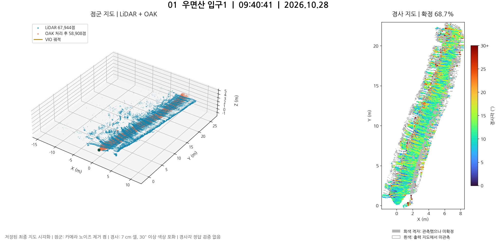
문제점 미확정 31.3%. 초기 3회 중 확정률이 가장 높지만 실제 경사각 정확도는 확인되지 않았다.
개선방안 이 기록을 비교 기준으로 두고, 평지와 경사 구간의 실측 각도로 오차를 먼저 확인한다.
2026.10.28 | 실제 주행 13개 | 점군 지도, 경사 지도, 처리 시간과 개선방안
실측 지도 13개 주행을 비교했다. 7개 주행은 경사 계산 평균부터 목표 500ms를 초과했고, 우면산 입구4는 계산 대기열 포화로 중단됐다.
| 주행 | 경사 계산 평균 | 경사 확정률 | 확정 / 관측 셀 | 마지막 큐 대기 |
|---|---|---|---|---|
| 우면산 입구1 09:40 | 405.3 ms | 68.7% | 10,383 / 15,105 | 2.52 s |
| 우면산 입구2 09:43 | 425.5 ms | 63.8% | 7,576 / 11,866 | 6.00 s |
| 우면산 입구3 09:46 | 339.8 ms | 54.0% | 3,438 / 6,370 | 0.06 s |
| 우면산 입구4 09:49 | 488.1 ms | 58.2% | 12,937 / 22,231 | 133.59 s |
| 이름 없는 주행 10:10 | 620.5 ms | 55.0% | 3,268 / 5,944 | 40.89 s |
| 이름 없는 주행 10:15 | 503.9 ms | 11.8% | 1,079 / 9,115 | 12.00 s |
| 이름 없는 주행 10:18 | 543.3 ms | 24.4% | 937 / 3,840 | 6.04 s |
| 평지이다가경사 10:40 | 645.4 ms | 33.6% | 3,202 / 9,530 | 33.39 s |
| 이름 없는 주행 10:54 | 418.6 ms | 10.8% | 429 / 3,955 | 4.01 s |
| 좁은길 10:58 | 494.4 ms | 32.2% | 1,288 / 3,995 | 23.37 s |
| 갈림길 11:11 | 582.4 ms | 40.1% | 2,320 / 5,787 | 30.89 s |
| 대성사1 13:18 | 708.8 ms | 85.6% | 3,586 / 4,190 | 43.52 s |
| 대성사2 13:21 | 590.6 ms | 80.5% | 6,142 / 7,633 | 51.47 s |
405.3 ms 경사 계산 평균 확정 68.7%마지막 입력 대기 2.52 s

문제점 미확정 31.3%. 초기 3회 중 확정률이 가장 높지만 실제 경사각 정확도는 확인되지 않았다.
개선방안 이 기록을 비교 기준으로 두고, 평지와 경사 구간의 실측 각도로 오차를 먼저 확인한다.
425.5 ms 경사 계산 평균 확정 63.8%마지막 입력 대기 6.00 s
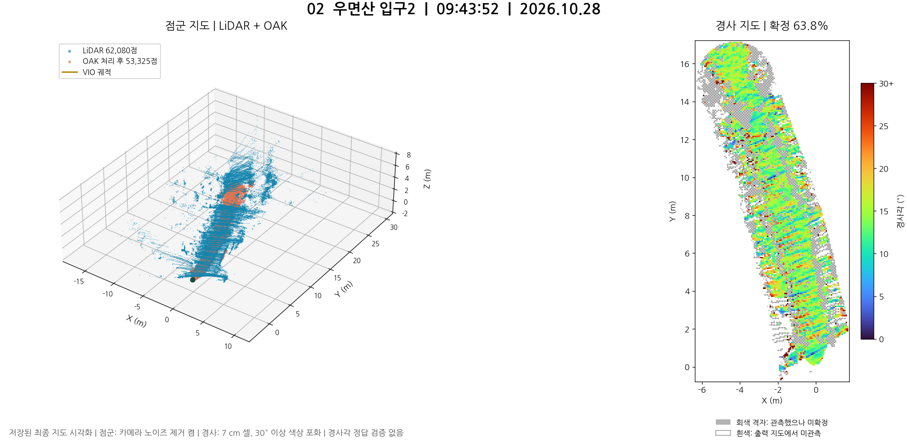
문제점 미확정 36.2%. 마지막 입력도 계산 전 6.00초를 대기했다.
개선방안 입력 처리와 경사 계산의 실행 순서를 개선하고, 같은 구간 재주행에서 출력 지연을 확인한다.
339.8 ms 경사 계산 평균 확정 54.0%마지막 입력 대기 0.06 s
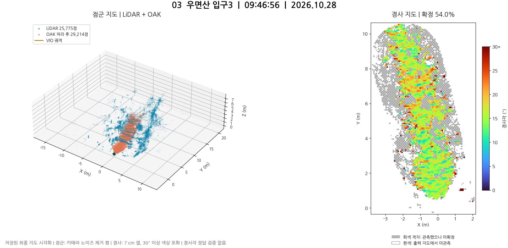
문제점 미확정 46.0%. 내부 높이 범위 초과 거절은 반복 판정의 13.0%로 입구1과 입구2보다 높다.
개선방안 미확정 구간의 센서별 점 분포를 확인하고, 점 부족과 실제 높이 혼재를 구분한다.
488.1 ms 경사 계산 평균 확정 58.2%마지막 입력 대기 133.59 s
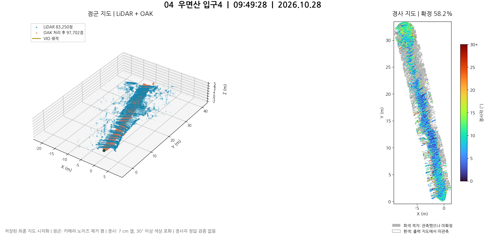
문제점 계산 대기열 포화로 수집이 중단됐다. 마지막 입력 대기 133.59초로, 평균 계산이 500ms 이하여도 실시간 동작에 실패했다.
개선방안 대기 입력을 충분히 반영한 뒤 계산하도록 worker를 수정하고, 저장 작업을 분리해 대기열 증가를 검증한다.
620.5 ms 경사 계산 평균 확정 55.0%마지막 입력 대기 40.89 s
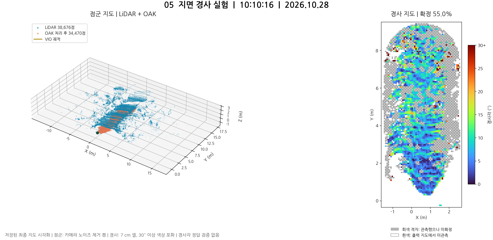
문제점 계산 평균 620.5ms로 500ms 목표 초과. 내부 높이 범위 초과 거절 26.2%, 마지막 입력 대기 40.89초다.
개선방안 처리 지연을 먼저 줄이고, LiDAR 단독과 OAK 단독 재생으로 높이 혼재가 발생하는 입력을 분리한다.
503.9 ms 경사 계산 평균 확정 11.8%마지막 입력 대기 12.00 s
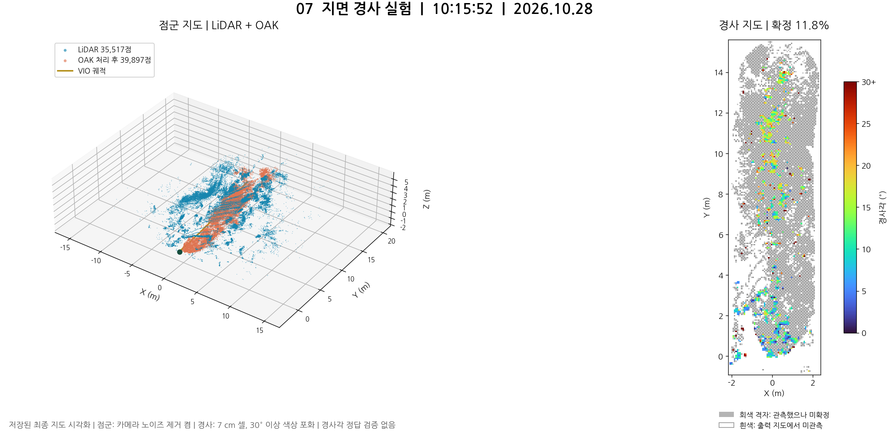
문제점 확정률 11.8%, 내부 높이 범위 초과 거절 42.4%. 별도 진단 재생에서도 높이 혼재, 점 부족, 평면 오차가 함께 나타났다.
개선방안 OAK 입력을 우선 점검한다. 진단 재생의 높이 범위 충돌 셀 중 91.4%에 OAK가 관여했으므로, 단일 프레임 깊이와 누적 정합을 나눠 확인한다.
543.3 ms 경사 계산 평균 확정 24.4%마지막 입력 대기 6.04 s
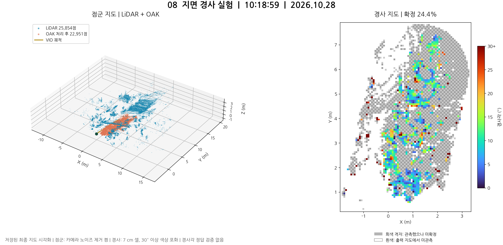
문제점 미확정 75.6%. 내부 높이 범위 초과 거절 37.4%, 계산 평균 543.3ms로 품질과 처리시간 문제가 함께 있다.
개선방안 지면 선택 전후와 센서 단독 결과를 비교하고, 출력 갱신이 밀리는 실행 경로를 개선한다.
645.4 ms 경사 계산 평균 확정 33.6%마지막 입력 대기 33.39 s
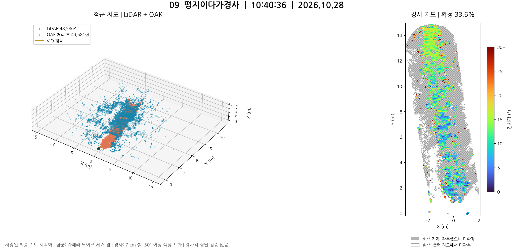
문제점 미확정 66.4%, 계산 평균 645.4ms. 이름에 해당하는 평지에서 경사로의 전환을 정확히 재현했는지는 검증되지 않았다.
개선방안 전환 구간의 실제 각도를 측정해 지면만 사용한 결과와 비교하고, 경계 부근 점 부족과 정합 오차를 확인한다.
418.6 ms 경사 계산 평균 확정 10.8%마지막 입력 대기 4.01 s
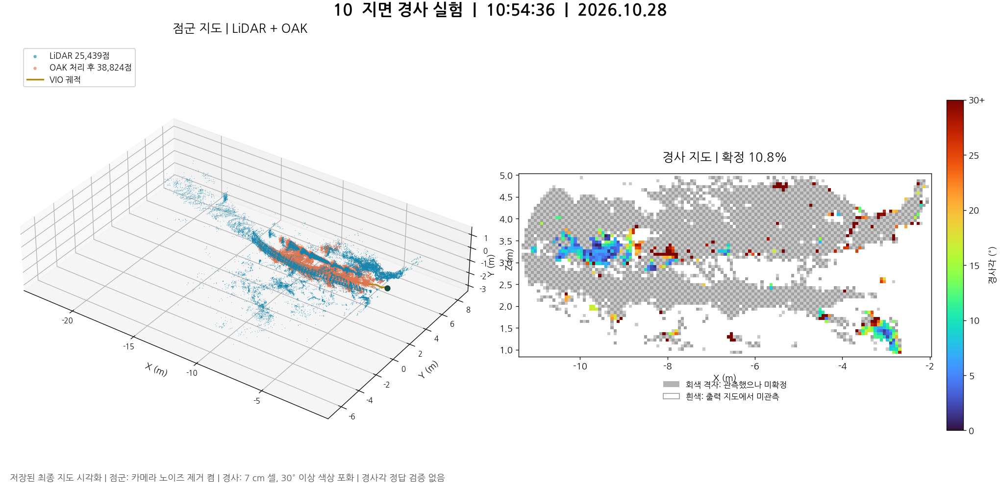
문제점 확정률 10.8%로 13개 중 최저다. 내부 높이 범위 초과 거절이 반복 판정의 69.0%다.
개선방안 동일 센서의 단일 프레임과 10초 누적 결과를 비교해 실제 다층 구조와 누적 오차를 분리한다.
494.4 ms 경사 계산 평균 확정 32.2%마지막 입력 대기 23.37 s
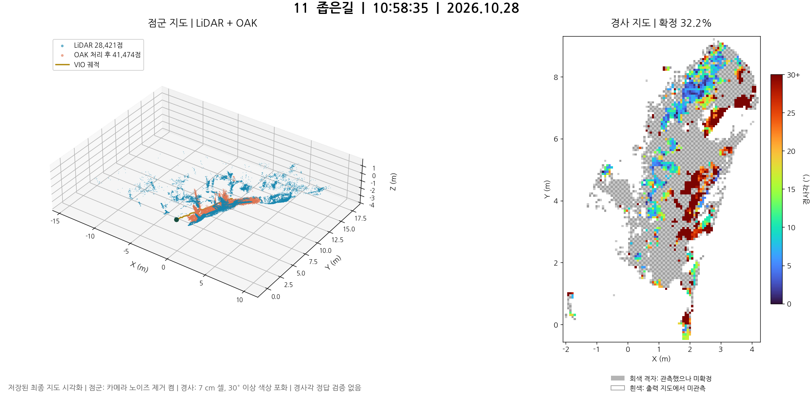
문제점 미확정 67.8%, 내부 높이 범위 초과 거절 49.4%. 마지막 입력 대기 23.37초로 지도 출력도 늦다.
개선방안 통로 지면과 주변 구조물을 분리해 경사 입력을 비교하고, 입력 처리 병목을 함께 줄인다.
582.4 ms 경사 계산 평균 확정 40.1%마지막 입력 대기 30.89 s
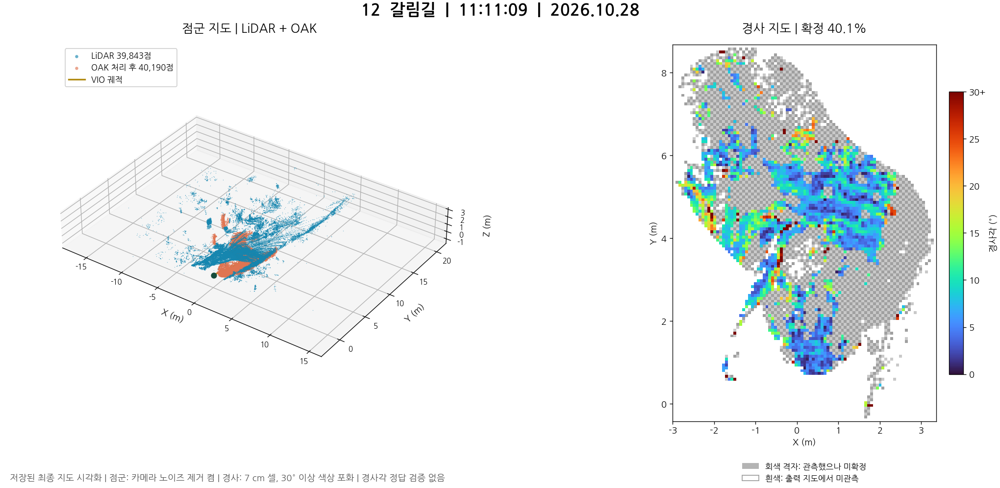
문제점 미확정 59.9%. 계산 평균 582.4ms, 마지막 입력 대기 30.89초다.
개선방안 진행 방향별 지면 관측과 미확정 구간을 확인하고, 같은 경로에서 지면 선택 전후 품질과 전체 지연을 비교한다.
708.8 ms 경사 계산 평균 확정 85.6%마지막 입력 대기 43.52 s
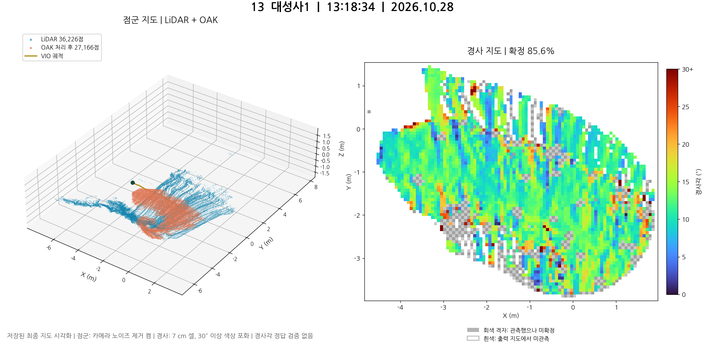
문제점 확정률 85.6%로 가장 높지만 계산 평균 708.8ms로 가장 느리다. 마지막 입력 대기 43.52초이며, 경사 지도에 띠 모양 변화가 보인다.
개선방안 계산 병목을 줄이고, 띠 모양 변화가 실제 지형인지 촬영 및 정합 영향인지 실측 단면과 비교한다.
590.6 ms 경사 계산 평균 확정 80.5%마지막 입력 대기 51.47 s
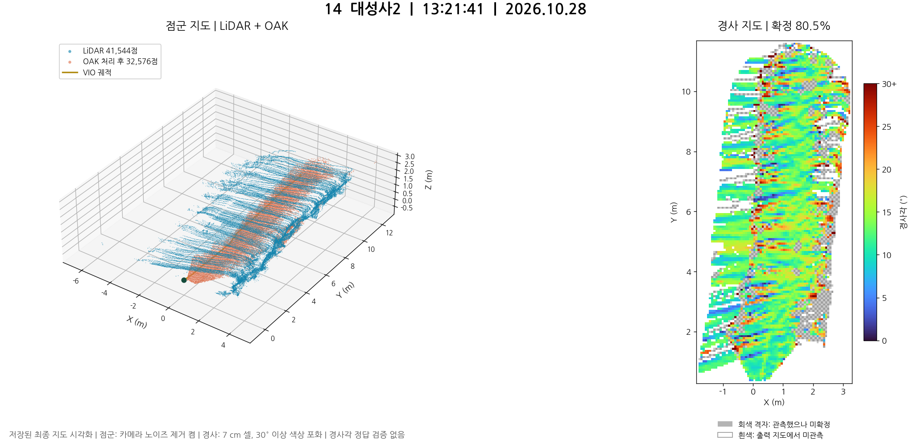
문제점 확정률 80.5%지만 계산 평균 590.6ms, 마지막 입력 대기 51.47초다. 확정된 셀에도 띠 모양 각도 변화가 보인다.
개선방안 반복 관측한 지면의 각도 일관성을 확인하고, 계산과 출력 지연을 함께 줄인다.
원본 세션별 최종 지도, metadata.json, terrain/status.json과 protocol.json을 근거로 정리했다. 10:15의 센서별 원인 분석만 별도 진단 재생을 사용했고, 원본 지도나 계산 시간을 재생 결과로 대체하지 않았다. 지도 없는 시작 실패와 중단 2건은 제외했다.